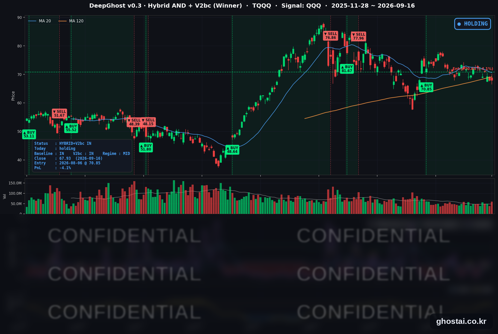

점도표: 금리 3번 인상
· Ghost.AI 데일리 리포트
👻 매일 시그널과 히스토리를 홈페이지에서 한눈에 → www.ghostai.co.kr
회원 페이지 안내 — 회원 가입하시면 커버리지 전 종목의 원본 시그널과 분석 레포트를 매일 확인하실 수 있습니다. 회원 페이지는 블로그·유튜브보다 먼저 업데이트됩니다. 선착순 100명을 모집하고 있으며, 이메일과 필명만으로 가입하실 수 있고 서비스 사용료는 받지 않습니다. 가입 신청 후 운영자 승인을 거쳐 이용하실 수 있습니다.
연준이 2023년 이후 처음으로 기준금리를 올렸고, 점도표는 여기서 한 번 더 올린다는 쪽을 가리켰습니다. 내년까지 3번 인상한다는 겁니다. 지수는 전부 상승 출발했다가 정규장에서 오른 폭을 되돌렸습니다. 금리 인상 3번을 모두 반영을 했을지 추가 하락이 있을지는 앞으로 지켜봐야 합니다.
📊 오늘의 매매 신호
| 항목 | 내용 |
|---|---|
| 오늘 할 일 | ✅ 아무것도 안 해도 됩니다 |
| 포지션 상태 | 📈 TQQQ 보유 중 (IN POSITION) |
| 매수 진입일 | 2026-08-06 (29거래일째) |
| 진입가 → 현재가 | $70.85 → $67.93 |
| 현재 포지션 수익 | -4.12% |
TQQQ 시그널 — IN POSITION
현재 상태: 매수 포지션 유지 중 | 이번 포지션 수익률 -4.12%

나스닥100(QQQ)은 +0.03%, TQQQ는 +0.04% 오른 67.93달러로 마감했습니다. 전략의 평가손익은 전 거래일 -4.16%에서 -4.12%로 0.04%p 올라왔습니다. 8월 6일 70.85달러에 진입한 뒤 오늘이 29거래일째이고, 이 가운데 평가손익이 마이너스였던 날은 10일입니다. 이번 구간에서 가장 낮았던 날은 전 거래일(-4.16%)이고 오늘이 두 번째로 낮습니다. 가장 높았던 날은 8월 13일의 +8.89%였습니다.
매수 조건에 다가가던 종목들은 오히려 조건에서 멀어졌고, 보유 중인 TQQQ는 매도 조건 쪽으로 조금 이동했습니다. 흔히 "금리를 올렸으니 싸게 살 자리가 생긴다"고 보지만, 이 모델의 매수 자리는 주가가 힘을 낼 때 만들어집니다. 장 초반 상승분을 장중에 반납하는 흐름은 그 반대입니다. 그래서 오늘 모델은 매수가 아니라 기다리는 쪽에 머물렀습니다.
참고로 모델은 손실 폭 자체를 보고 매도를 결정하지 않습니다. 매도 조건은 별도의 시장 상태 지표로 판단하며, 오늘은 그 조건을 만족하지 않았습니다.
오늘 미국 시장 — 시황 요약
지수 마감
| 지수 | 종가 | 등락률 |
|---|---|---|
| S&P 500 | 7,551.81 | -0.45% |
| 나스닥 종합 | 25,978.42 | -0.01% |
| 다우존스 | 51,461.90 | -1.21% |
| 러셀 2000 | 2,858.81 | -0.40% |
| QQQ (나스닥100) | 704.72 | +0.03% |
| TQQQ | 67.93 | +0.04% |
종가는 작게 끝났지만 장중 변동은 컸습니다. QQQ는 700.00에서 711.85까지 1.68% 폭을 오갔고, TQQQ는 저가 66.545에서 고가 69.97까지 움직이고도 +0.04%로 마감했습니다. 지수별 격차도 벌어졌습니다 — 나스닥은 거의 제자리였는데 다우는 -1.21% 내렸습니다. 금리 부담을 크게 받는 가치·경기민감 업종이 다우에 많이 들어 있기 때문입니다.
국채 금리 동향
| 만기 | 수익률 | 전 거래일 대비 |
|---|---|---|
| 3개월 | 3.970% | +1.0bp |
| 5년 | 4.859% | +3.3bp |
| 10년 | 5.006% | +1.0bp |
| 30년 | 5.349% | -1.5bp |
10년물 5.006%는 2007년 7월 이후 가장 높은 종가입니다. 하루 변동은 1bp에 불과하지만, 그 사이 3년 가까이 넘지 못하던 5% 선 위에서 마감했다는 위치가 중요합니다.
눈에 띄는 것은 만기별로 방향이 갈렸다는 점입니다. 5년물은 +3.3bp 올라 점도표의 경로 상향을 그대로 반영했는데, 30년물은 오히려 -1.5bp 내렸습니다. 지금 더 조이면 먼 미래의 물가는 덜 걱정해도 된다는 쪽으로 기운 것으로, 매파적 인상에 전형적으로 나타나는 커브 반응입니다. 그 결과 30년−5년 스프레드가 49.0bp로 2026년 들어 가장 좁아졌습니다. 역전은 없고 정상 커브를 유지한 채 장기 구간만 낮아진 모양입니다. 10년−3개월은 103.6bp로 전 거래일과 같습니다.
연준 발언 & 금리 패스
연준은 기준금리를 3.75~4.00%로 25bp 인상했습니다. 2023년 이후 첫 인상입니다. 인상 자체는 시장이 이미 80% 중후반 확률로 반영하고 있었지만, 표결이 예상 밖이었습니다. 7월 회의에서 9-3으로 갈렸던 표결이 이번에는 12-0 만장일치였습니다. 인상에 반대하던 쪽이 두 달 만에 전부 돌아섰다는 뜻입니다.
점도표는 경로를 한 칸 위로 올렸습니다. 2026년 말 기준금리 중앙값이 6월의 3.8%에서 4.1%로 올라갔습니다. 오늘 인상분을 반영하고도 연내 25bp 한 번이 더 남아 있다는 계산입니다. 18명 중 16명이 추가 인상을 예상했고 그중 4명은 두 번을 봤습니다. 2027년과 2028년 중앙값도 각각 4.1%·3.9%로 올라가, 내년에 내리기 시작한다는 그림은 사라졌습니다.
케빈 워시 의장은 기자회견에서 "우리 임무의 주된 초점은 물가안정 쪽에 있습니다", "인플레이션이 너무 높고 그 상태가 너무 오래됐다는 것은 명백한 사실입니다"라고 말했습니다. 추가 인상 여지를 좁히는 문구가 나오지 않으면서 지수가 방향을 바꿨고, 다우는 기자회견 도중 한때 1.6%까지 밀렸습니다.
오늘의 핵심 이슈
-
인상 반대표가 사라졌습니다. 인상 폭보다 표결 구성이 더 중요한 회의였습니다. 위원회 안에서 물가가 더 급한 문제라는 판단이 정리됐다는 신호이고, 표결이 모이면 다음 결정의 문턱도 낮아집니다.
-
금리 경로가 위로 고정됐습니다. 점도표가 연말·내년·내후년 중앙값을 모두 올렸습니다. 성장률 전망은 2.3%로 상향, 실업률은 4.1%로 하향됐습니다. 경기가 버텨 주니 조일 여력이 있다는 구성입니다.
-
지수는 갭 상승분을 정규장에서 모두 반납했습니다. 개장 전에는 인상이 이미 반영됐다는 안도가 우세했고, 기자회견을 거치며 그 안도가 걷혔습니다. 종가가 차분한 것은 방향이 없어서가 아니라 서로 반대인 두 힘이 상쇄된 결과입니다.
변동성 & 투자심리
VIX는 17.20에서 17.71(+2.97%)로 올랐고, 장중에는 18.94까지 갔다가 되돌아왔습니다. 최근 1년 기준으로 경계 수준은 아니지만 평온한 구간도 아닙니다.
공포탐욕지수는 29로 공포 구간입니다. 지수 종가가 크게 내리지 않았는데도 심리 지표가 공포에 머물러 있다는 점이, 종가로는 보이지 않는 장중 부담을 보여 줍니다. 10년물 5%, WTI 100달러 위, VIX 17 중반이 동시에 유지되는 조합이라 재료 하나만 나빠져도 변동이 커질 수 있는 상태입니다.
매크로 & 원자재
| 품목 | 종가 | 등락률 |
|---|---|---|
| WTI 원유 | $102.02 | -3.60% |
| Brent 원유 | $105.60 | -2.90% |
| 금 선물 | $4,302.50 | -0.70% |
유가가 내린 것은 손상된 사우디 송유관이 며칠 안에 재가동된다는 미국 에너지부 발언과 미국 원유 재고 증가가 겹쳤기 때문입니다. 다만 되돌림 폭보다 이번 달 상승폭이 훨씬 큽니다 — WTI는 8월 말 85.76달러에서 이번 달에만 +19.0%, 브렌트는 +16.7% 올라와 있습니다. 복구가 늦어지면 유가가 다시 인상 논리를 강화하는 자리입니다. 금은 이번 달 -4.0%로, 금리 상승 국면에서 힘을 받지 못하고 있습니다.
주요 종목 동향
| 종목 | 종가 | 등락률 | 비고 |
|---|---|---|---|
| INTC | 101.05 | +4.03% | 갭 +4.39%로 출발. 파운드리 턴어라운드 재료 |
| NVDA | 213.90 | +0.82% | 반도체 강세에 동참, 정규장 변동 -0.11% |
| META | 673.31 | +0.46% | 갭 +1.42% 중 절반 이상 반납 |
| TSLA | 358.08 | +0.42% | 커버리지에서 정규장 상승을 지킨 하나 |
| AAPL | 332.41 | +0.32% | 갭 +0.33%를 그대로 유지, 정규장 변동 없음 |
| AVGO | 339.51 | +0.07% | 갭 +1.02%를 정규장에 대부분 반납 |
| MU | 926.55 | -0.11% | 갭 +0.82% 반납, 저가 917.65 |
| GOOGL | 342.87 | -0.61% | 정규장 -1.18%, 갭을 넘어서 하락 |
| AMZN | 245.96 | -0.99% | 갭부터 약세, 저가 244.30 |
| MSFT | 490.30 | -1.37% | 지수 ETF와 달리 갭도 -0.79%로 열림 |
| QCOM | 184.84 | -1.58% | 정규장 -2.35%로 커버리지 최대 낙폭 |
| NFLX | 76.41 | -1.91% | 커버리지 최하위, 장중 고가가 시가 |
INTC의 상승은 FOMC와 무관한 개별 재료입니다. 목표주가 상향이 잇따랐고, 파운드리 공정 진척과 10월 PC용 CPU 가격 인상 계획이 함께 언급됐습니다. 다만 목표주가와 협력 논의는 회사 공식 발표가 아니라 보도 기준이라 확정 사실로 받아들이기에는 이릅니다. 반대로 QCOM과 NFLX는 종목 재료보다 금리 경로 상향에 따른 밸류에이션 조정으로 보입니다.
다음 거래일 일정
- 주간 신규 실업수당 청구 (9/17 오전 8시 30분, 동부시간) — 점도표가 실업률 전망을 낮춘 직후라, 고용이 계속 버티는지가 추가 인상 논리를 좌우합니다.
- 필라델피아 연은 제조업 지수 (같은 시각) — 전월 41.4에서 25.0으로 큰 폭 둔화가 예상되는 지표입니다. 실제치가 예상을 크게 밑돌면 매파 경로에 제동이 걸릴 수 있습니다.
- 국채 장기 구간 — 오늘 30년물만 반대로 움직인 것이 하루짜리 움직임인지, 커브 평탄화가 이어지는지 확인할 구간입니다.
Ghost.AI — Quantitative AI Investment
Model: DeepGhost v0.3 | Transformer-Based Deep Learning
Coverage: 13 tickers | Updated every trading day after US market close
⚠️ 본 자료는 정보 제공 목적으로만 작성되었으며 투자 권유가 아닙니다. 모든 투자의 책임은 투자자 본인에게 있습니다. 과거 성과가 미래 수익을 보장하지 않습니다.
[유의사항]
- 본 서비스는 불특정 다수를 대상으로 발행되는 단방향 정보 제공 서비스이며, 투자자 개인의 재산 상황·투자 목적·위험 선호도를 반영한 개별 투자 조언이 아닙니다.
- 고스트에이아이 주식회사는 고객과 쌍방향 의사소통(개별 상담, 맞춤형 자문 등)을 제공하지 않습니다.
- 본 콘텐츠는 투자 권유 또는 매매 주문의 청약·청약의 권유에 해당하지 않으며, 최종 투자 판단 및 그에 따른 손익의 책임은 전적으로 투자자 본인에게 있습니다.
고스트에이아이 주식회사